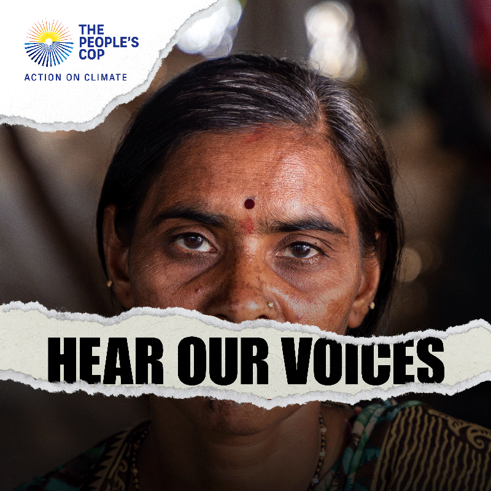

SOURCE:THE PEOPLE'S COP
About The People's COP 27

We live in an era of extraordinary climate injustice.
Those most affected by our warming world are shut out of the negotiations that will determine the future of our planet. Global action on climate change is not happening fast enough.
The world’s biggest multi-national meetings held to discuss humanity’s collective response to the climate crisis are the United Nations’ Climate Change Conference of the Parties - the climate COPs - now in their 27th year.
As the world heats up, the voices of those first and worst affected by the climate crisis are not being listened to in the air-conditioned halls of these conferences. The delegates of this year’s COP27 must listen to the people already living with the severe consequences of our warming world.
The People’s COP27 made it simple for world leaders to listen…
The People’s COP27 virtual event took place on the 1st November. Expert speakers that represent those who are already being impacted by climate change discussed the key themes that the world leaders at COP27 must act on.
Featuring films, interviews, key note speakers and expert panellists, this event represented the voices of the unheard, bringing the most important perspectives to the table before COP27 began.
You can catch up now on all of the sessions from The People's COP27, and sign the People's Climate Manifesto.
Watch the event on-demand
The People's COP27 has now ended, but you can catch up on all of our sessions on demand now.
Loss and Damage
Open on original site ↗Climate Justice
Open on original site ↗Mitigation
Open on original site ↗SOURCE:THE PEOPLE'S COP